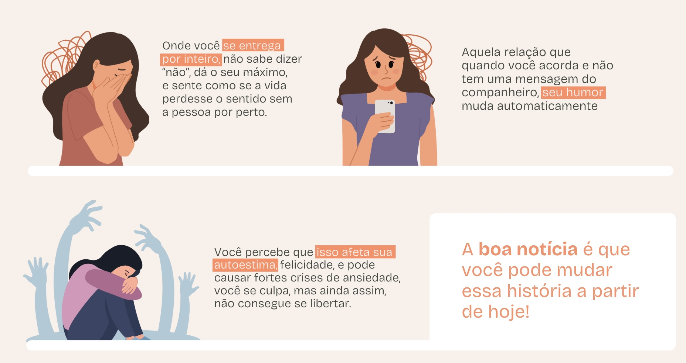
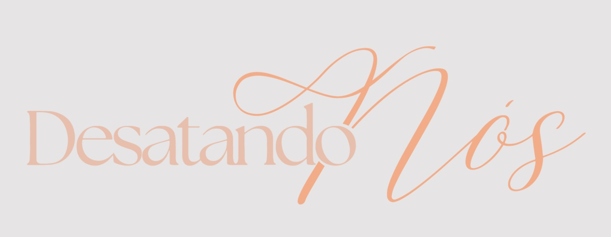

Minhas alunas livres da
dependência emocional

Já sofreu por amor ao
ponto de se perder?

Como saber se sou emocionalmente dependente?
- Sensação de vazio ao ficar sozinha.
- Sentir-se aprisionada em relacionamentos que causam mais dor do que alegria.
- Busca incessante pela aprovação do outro.
- Sente que sua vida irá acabar sem a pessoa.
- Sempre está à disposição da pessoa e deixa suas prioridades de lado.
- Medo constante de ser abandonada ou rejeitada.
- Falta de identidade própria fora do relacionamento.
- Autoestima abalada, falta de confiança em suas próprias decisões e valor.
- Seu humor muda sempre que a pessoa não faz o que você quer.
- Sente ciúmes excessivo.
- É stalker da pessoa, está sempre monitorando o perfil dela nas redes sociais.
Às vezes o que você acha que é excesso de amor,
muitas vezes é dependência emocional.
muitas vezes é dependência emocional.
Eu também já fui
dependente emocional
dependente emocional
Vivia na dependência de uma declaração de amor, mesmo que a
situação não fosse boa. Precisava muito da validação da pessoa,
meu humor mudava de acordo com o humor dele, então se ele tava bem
eu tava bem.
Tínhamos
muitas brigas por ciúmes
e eu não gostava das amizades dele. Eu vivia doente, emagreci
muito e cheguei a pesar
44kg.
Os maiores medos da minha vida era dele me trair e de me abandonar para sempre. Mas eu venci a dependência emocional e você também pode!
Os maiores medos da minha vida era dele me trair e de me abandonar para sempre. Mas eu venci a dependência emocional e você também pode!

Tínhamos
muitas brigas por ciúmes
e eu não gostava das amizades dele. Eu vivia doente, emagreci
muito e cheguei a pesar
44kg.
Os maiores medos da minha vida era dele me trair e de me abandonar para sempre. Mas eu venci a dependência emocional e você também pode!
Os maiores medos da minha vida era dele me trair e de me abandonar para sempre. Mas eu venci a dependência emocional e você também pode!
Conheça o método
Onde você vai explorar as raízes da dependência emocional, desenvolverá uma mentalidade forte e aprenderá a desatar nós que te aprisionam num relacionamento atual ou passado onde tem mais dor que felicidade.
Para quem é o método ?
- Quem busca reconstruir a autoestima abalada.
- Está cansada de relações que a diminui.
- Quer deixar de sofrer por alguém.
- Sente ciúmes exagerados.
- Quer conquistar uma vida emocionalmente independente.

O que você vai aprender
com o Desatando Nós?
- Identificar padrões de dependência emocional.
- Desenvolver autoconhecimento e autoaceitação.
- Estabelecer limites saudáveis em relacionamentos.
- Reconhecer sua identidade e fortalecer sua autoestima.
- Criar relacionamentos enriquecedores e equilibrados.
- Abraçar a liberdade de viver uma vida autêntica e independente.
Conheça os módulos do curso

Maturidade emocional: Reconfrote-se

Introdução

Raízes da insegurança

Dependência Emocional

Em busca de validação

Relacionamentos instáveis. Você sente ciúmes demais?

Síndrome da Impostora

Vencendo a dependência emocional

O que fazer para me sentir bem comigo mesma?
+Bônus que aceleram seu resultado
Ao fazer sua inscrição no método Desatando Nós você
GANHA bônus únicos de presente:
E-book Autoestima saudável +
Aulas para desenvolver maturidade emocional
Grupo de alunas
no WhatsApp
VOCÊ NÃO ESTARÁ SOZINHA!
Ao se inscrever, você será adicionada ao nosso grupo de WhatsApp, onde estarei disponível para oferecer suporte e orientação em sua jornada de autodescoberta e crescimento emocional.